1. Первый экран — кто вы
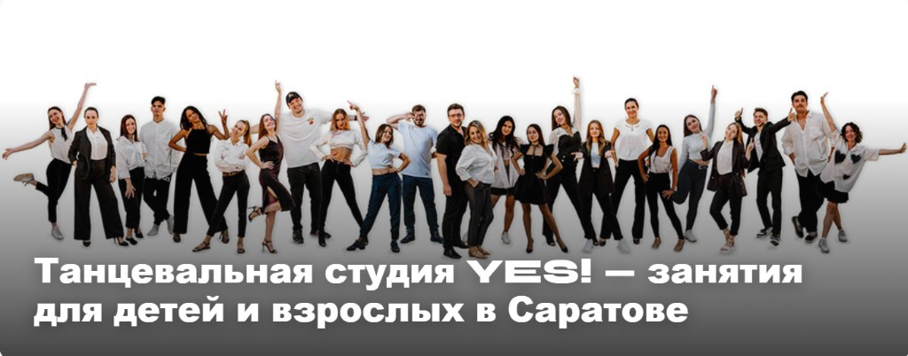
«Понятно сразу — танцы для детей и взрослых»
YES!
Прототип обновлённой главной для YES! Dance Studio, Саратов
Проблема
Цепочка: Google → клик → главная → заявка. Первый шаг отличный. Слабое место — что происходит после клика, особенно с телефона.
Трафик есть → конверсия в заявку — то, что можно улучшить без увеличения рекламы.
У вас уже отлично
По запросу «танцевальная студия саратов» YES! — первая в Google и в блоке компаний Яндекса. Домен, контент и годы работы уже приносят результат.
Я не предлагаю «чинить сломанное» — предлагаю дожать воронку после клика.
#1
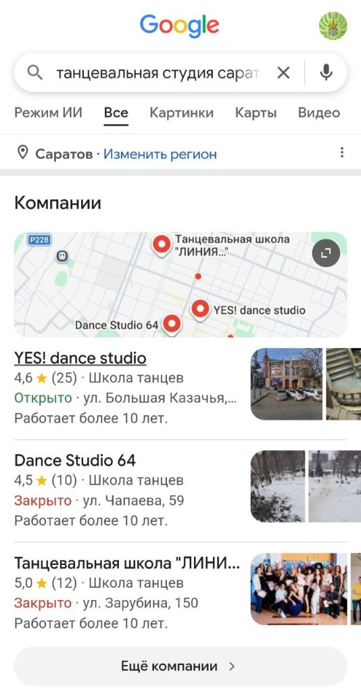
Первые 3 секунды
Слева — yesds.ru. Справа — прототип. Сверху десктоп, снизу телефон.
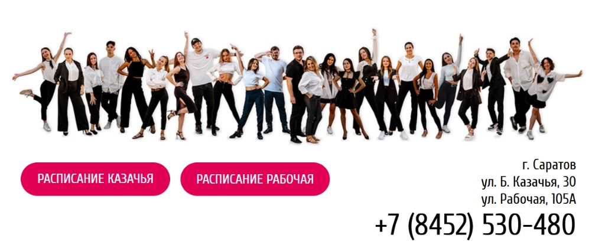
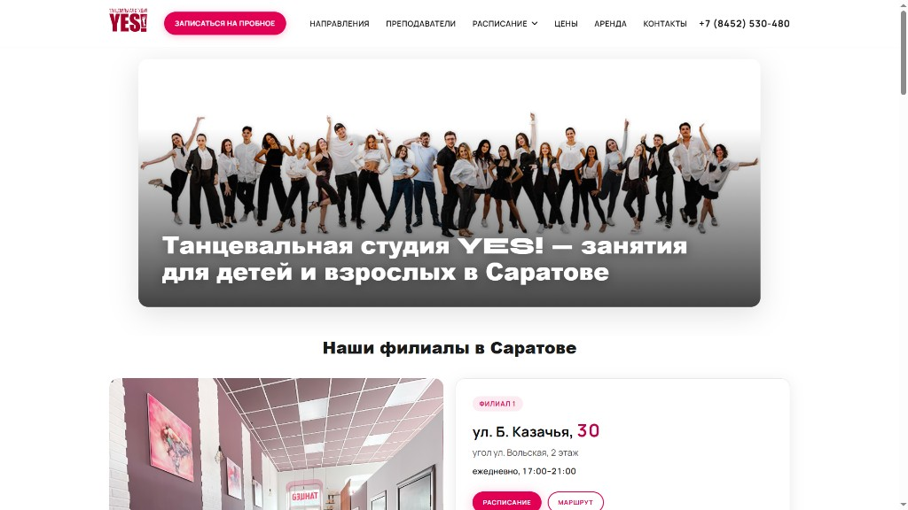
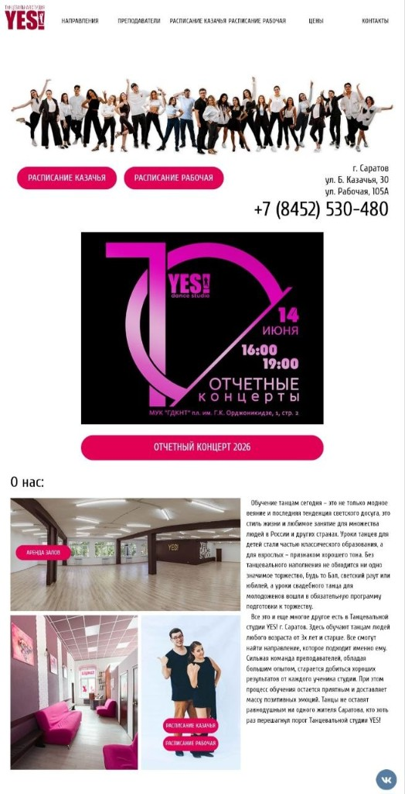
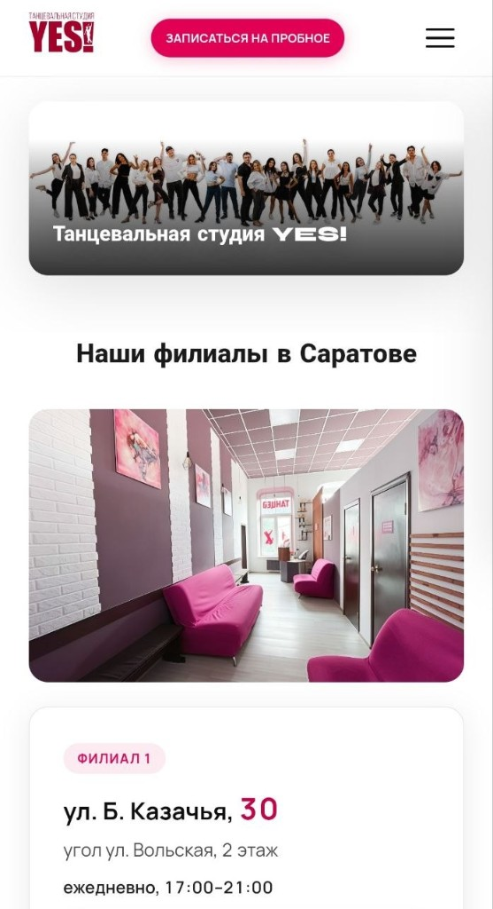
Структура · шаги 1–2
Контент у вас уже был. Я переложила его в маршрут — так его видит потенциальный клиент: родитель или взрослый ученик.

«Понятно сразу — танцы для детей и взрослых»
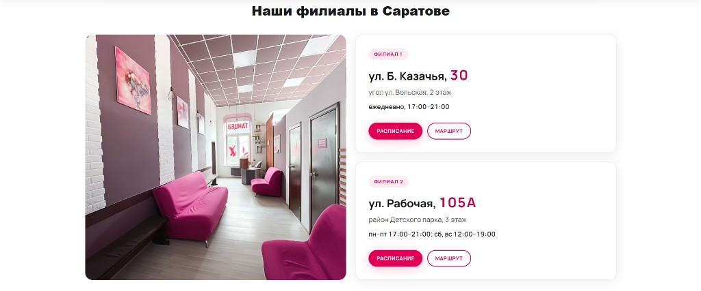
«Куда ехать — вижу сразу»
Структура · шаги 3–5
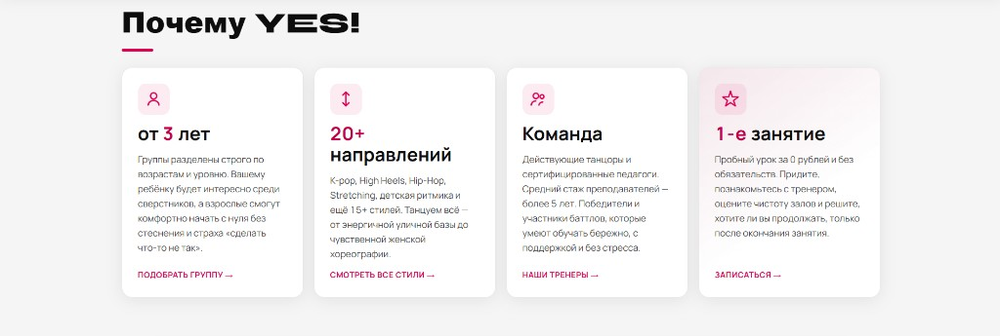
«Подходит по возрасту и стилю»
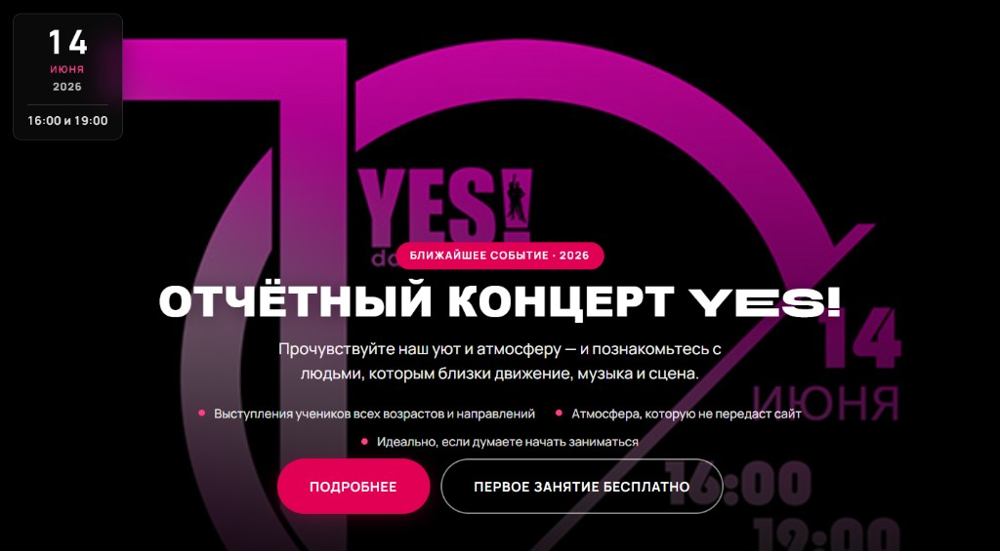
«Живая студия, не просто зал»
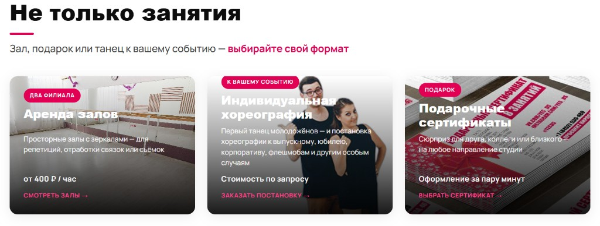
«Можно ещё аренду или подарок»
Структура · шаги 6–8
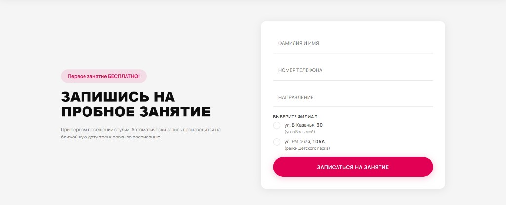
«Пробное бесплатно — запишу сейчас»
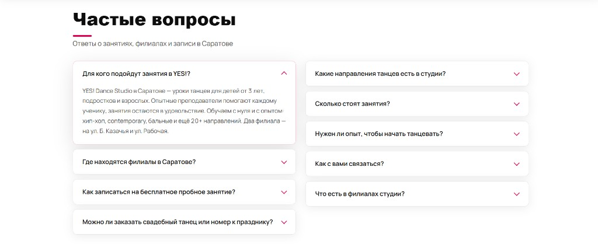
«Ответы без звонка — спокойнее»
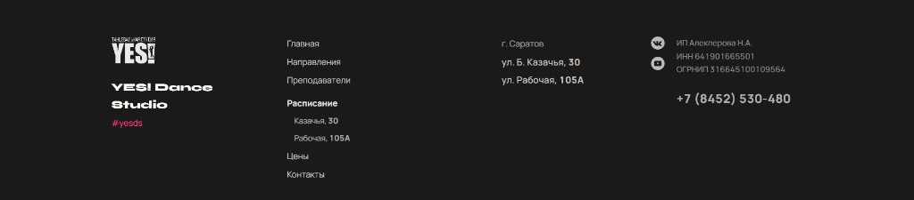
«Контакты на месте — доверяю»
Конверсия
Честно: отправка в прототипе ещё не подключена к вашей системе — это этап запуска.
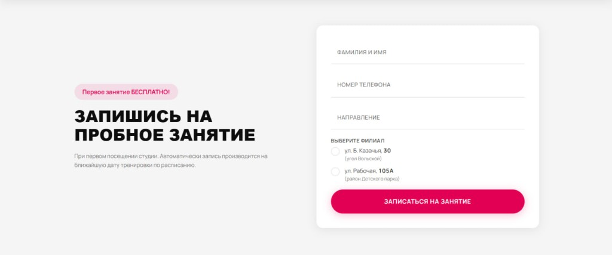
SEO
Улучшенная главная помогает удержать позиции в Google и Яндексе, попасть в расширенные блоки и получать клики с точных запросов.
| Было (yesds.ru) | Стало (прототип) |
|---|---|
| Title: «Главная | Танцевальная студия YES!» | «Студия танцев YES! в Саратове — обучение детей и взрослых» |
| Нет блока FAQ | 9 вопросов-ответов для родителей и взрослых учеников |
| Нет Schema.org | Студия, 2 филиала, концерт, FAQ |
| Мало alt у картинок | Описательные alt-тексты |
| Ссылки на карты разбросаны | Прямые ссылки на Яндекс.Карты |
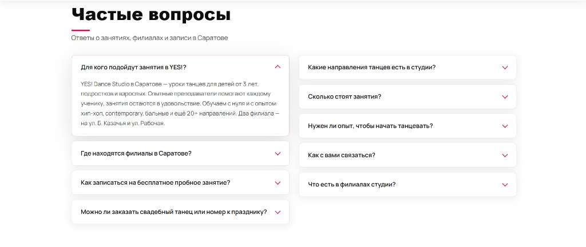
Доверие
Филиалы, бесплатное пробное, ответы и реквизиты — в одном визите, без пяти переходов по разделам.
FAQ на главной не было — ответы искали по разделам.
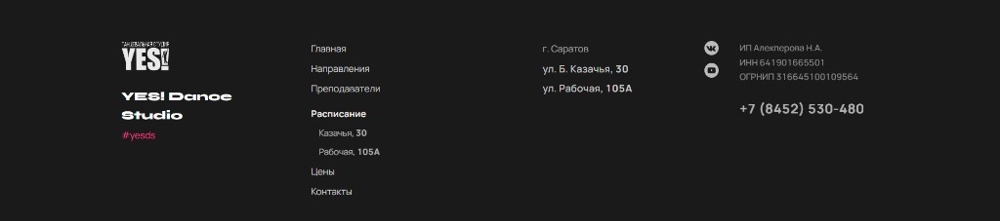
Важно
Как обновить зал: студия та же, ощущение — свежее.
Честно
Итог
Больше заявок с телефона — короче путь к форме
Устойчивее позиции — FAQ и разметка
Выше доверие — всё на одной странице
При первой позиции в поиске даже +10–15% дошедших до формы — ощутимый прирост без увеличения рекламы.
Спасибо, что посмотрели! YES! заслуживает сайта, который цепляет так же, как студия на сцене. Готова обсудить перенос на домен, внутренние разделы и следующий этап — напишите, когда будет удобно.